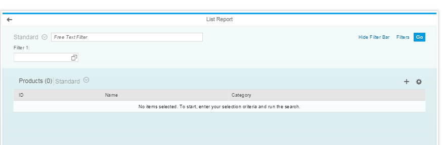
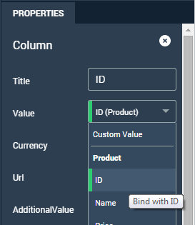
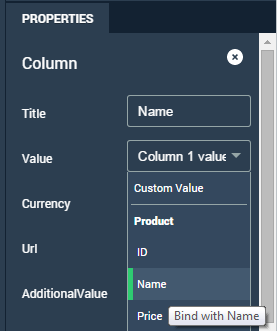
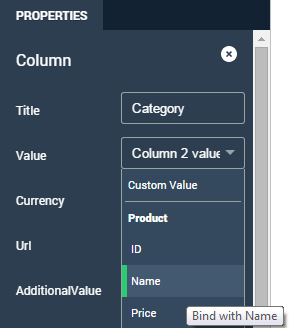
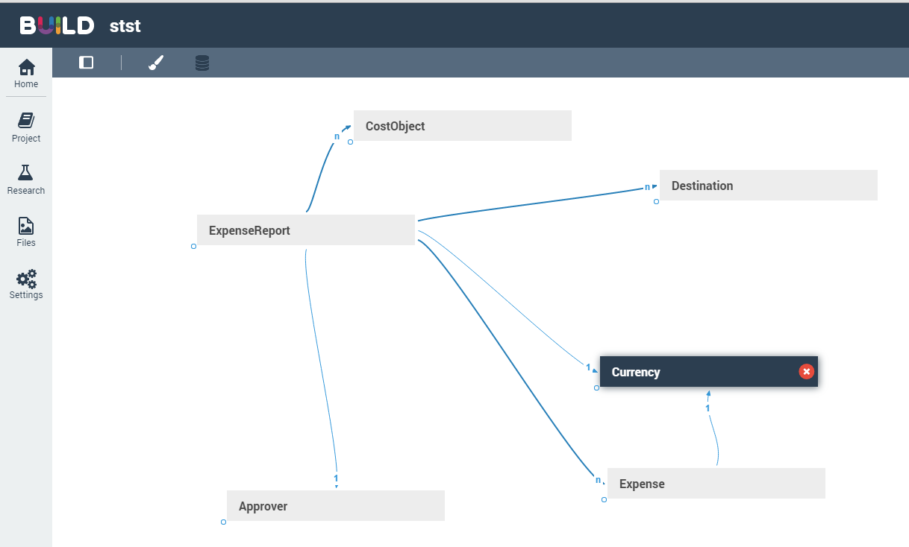

Each page, whether it is a list report or an object page, has its main object.
When you create a list report and object pages you must select a main object. In most cases, the main object of the first object page should be the same as the main object of the list report. When you select a main object, you bind your page to that object.
In BUILD, when you select a value for a filter or a column in a table, you link, or bind it to a property of the object, which allows you to acquire all the data of the property. This page shows some concrete examples of binding.
In this example, a table was defined with three columns. Values were selected for each column to bind them to the property.
Table

Values for the columns were set under Properties as follows:



You can have sections in object pages that show relations between objects. For example, for a list report whose main object is ExpenseReport, you can have an object page whose main object is also ExpenseReport and a second object page whose main object is Destination. BUILD allows you to navigate from one object page to another by binding the URL of the page in the Properties pane.
Data Model
